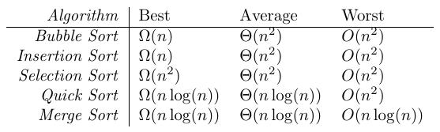

LaTeX Table Creator User’s Guide
Introduction
The LaTeX Table Creator is an application that allows the user to input data into a grid and export the contents to LaTeX syntax given a few options. The program is not a WYSIWYG interface and certainly does not provide a complete set of options. This program is for quick conversions of table data into either table or matrix LaTeX code. It does offer copy and paste capabilities within the program and between the program and most spreadsheets (tab delimited text transfer). In addition, there are several options for populating the grid, transposing, resizing, inserting and deleting rows and columns, undo and redo, and file saving and loading of the data grid.

The LaTeX export is done through the system clipboard. The user should populate the grid with the desired data, select the LaTeX options on the right side of the window and then copy the grid as LaTeX code. From there the user can paste the code into any editor they are using to create their document.
The program currently supports longtable, tabular, tabbing, array, matrix, pmatrix, bmatrix, vmatrix, and Vmatrix environments. When copied, the clipboard text will have a commented line of any needed packages to be included in the preamble of the document. Each of the supported environments has a set of options for that environment, which includes alignment options, border and division options, header row and column creation, automatic math mode inclusion, and matrix decorations.
This program is designed to make the creation of LaTeX tables easier but is not designed to do everything for the user. For someone who is familiar with LaTeX typesetting and the basic code for tables it will provide a nice layout that should be easy to edit and manipulate. In addition, there are options for exporting the grid contents to Mathematica, and Maxima code as well as [ ] and < > delimited strings that are commonly used in other packages.
So why create yet another program to make typesetting LaTeX tables easier when there are so many LaTeX IDEs that provide table wizards? Most of the table wizards I have used do not provide the options I need most often. Some do not allow copy and paste between a spreadsheet. Some try to do too much and hence the pasted LaTeX code is hard to read and very difficult to edit. None that I have used allow for undoing and redoing nor allow the user to save and open data grids. In addition, when the wizards paste in the LaTeX code they close, so if you need to make an alteration you must either edit the code or start the wizard over again.
I am by no means saying that this program is any better than the other software for creating LaTeX tables, it simply has the features I need to do 95% of the tables in my documents. I hope you find it useful and if not I hope you find an application that suits your needs.
Running the Program
The application is available for free from my web site for the Windows, Mac, and Linux platforms. This version was written in Python using the PyQt/PySide GUI toolset. The program was then packaged using PyInstaller so that the end user does not need to have either Python or the GUI libraries loaded on their machine. The program has been tested on Windows 10, MacOS Big Sur and Mojave, Linux Mint 19.2, Mint 20.2, and Ubuntu.
- The distribution programs should run on any machine with the respective operating system.
- All programs are standalone/portable and do not require installation.
- Each download is a zip file containing the program and icon files for the program if you need them.
- Since the files contain the Python interpreter they are fairly large and may take a few seconds to load and start the application.
Program Layout
On the left is the data grid where you can type in or copy and paste data for conversion to LaTeX. This grid works like a standard spreadsheet but without any calculation abilities. Above the table are spinners that allow the user to resize the grid. These do not change the size of the grid until the value is selected by either pressing enter or the spinner losing "focus". The additional rows and columns are added to the bottom and right respectively.
On the right is the LaTeX Options window. This will be discussed in more detail below. The options here depend on the grid type that is selected. When this drop-down box is changed the options for that type of LaTeX grid will be displayed. These options will be used when the user selects to copy the LaTeX code to the clipboard. This options window and be moved to the left side of the program frame by a click and drag. Similarly you can undock it from the main program window in the same way.
File Options
The file options allow you to save and load table information. The saving and loading of table information is just on the current table itself, the undo and redo history is not saved.
New
The New option will open another copy of the program with a blank grid.
Open
The Open option will open a table data file. When a file is opened it will replace the current table with the saved one. The undo/redo history is not cleared so the table that overwritten is still in the history. The data files are stored in binary format and cannot be edited with an outside editor.
Save As...
The Save As... option will save the current table to a table data file. Saving will save only the current table and not the history. The data files are stored in binary format and cannot be edited with an outside editor.
Edit Options
The Edit menu contains standard copy and paste options as one would expect. It also has options for creating LaTeX code, as the program was designed to do, and export to specialized formats.
Copy Selected, Copy All, & Paste Options
These are your usual options for clipboard transfer to and from the grid. Copy Selected copies the currently selected portion of the table as tab delimited text to the clipboard. Copy All does the same but with the entire grid. Paste will paste in tab delimited text to the table at the currently selected position. With the paste option, if what is being pasted at the current position needs more space, rows or columns, the grid will automatically resize itself to fit the added content.
Copy as LaTeX
The Copy as LaTeX option will create LaTeX code for the current grid contents using the options you have selected in the LaTeX Options box. This code is automatically copied to the clipboard so you can paste it into your LaTeX document. Details about what these options do is discussed below. For example, if you use a long table with the default options the program would put the following into the clipboard.
% Package: \usepackage{longtable}
\begin{longtable}[l]{lll}
1 & 4 & 7 \\
2 & 5 & 8 \\
3 & 6 & 9 \\
\end{longtable}
Paste from LaTeX
There is also an option to paste from LaTeX code, Shift+Ctrl+L or using the menu option Edit > Paste from LaTeX. This will take the body of LaTeX code, extract the cell entries, and load the data into the grid. As with exporting to LaTeX code the entire grid is replaced with the data, not just the selection. For example, if you had the following table,
\begin{longtable}[l]{lll}
1 & 4 & 7 \\
2 & 5 & 8 \\
3 & 6 & 9 \\
\end{longtable}
and then copied the body portion to the clipboard, not including the begin and end statements, that is,
1 & 4 & 7 \\
2 & 5 & 8 \\
3 & 6 & 9 \\
then select Shift+Ctrl+L or Edit > Paste from LaTeX the program would extract the contents into the grid,
1 4 7
2 5 8
3 6 9
This option will also parse through \hline code but will not process multicolumn commands and some other specialized content.
Copy as SageMath
The Copy as SageMath will formulate the grid as a SageMath matrix. For example, the standard grid
1 4 7
2 5 8
3 6 9
will copy as
matrix(QQ,[[1,4,7],[2,5,8],[3,6,9]])
Copy as Maxima
The Copy as Maxima will formulate the grid as a Maxima matrix. For example, the standard grid
1 4 7
2 5 8
3 6 9
will copy as
matrix([1,4,7],[2,5,8],[3,6,9])
Copy as Mathematica
The Copy as Mathematica will formulate the grid as a Mathematica matrix, that is { } delimited. For example, the standard grid
1 4 7
2 5 8
3 6 9
copies as
{{1,4,7},{2,5,8},{3,6,9}}
Copy [...] Delimited
This copies as [ ] delimited string. For example, the standard grid
1 4 7
2 5 8
3 6 9
copies as
[[1,4,7],[2,5,8],[3,6,9]]
Copy {...} Delimited
This copies as { } delimited string. For example, the standard grid
1 4 7
2 5 8
3 6 9
copies as
{{1,4,7},{2,5,8},{3,6,9}}
Copy <...> Delimited
This copies as < > delimited string. For example, the standard grid
1 4 7
2 5 8
3 6 9
copies as
<<1,4,7>,<2,5,8>,<3,6,9>>
Copy as HTML
This copies as < > delimited string. For example, the standard grid
1 4 7
2 5 8
3 6 9
copies as

Undo & Redo
The program also has undo and redo features, using the menu or the standard Ctrl+Z and Ctrl+Shift+Z respectively. Every time the grid is changed the undo history is updated with the new grid. The program does not limit the number of undos that are possible.
Table Options
The table options allow you to manipulate the data grid. Adding and deleting rows and columns, adjusting of cell sizes, and a few specialized operations.
Inserting Rows and Columns
Inserting rows and columns will insert a row or column either before and after the selected region. There must be at least one cell currently selected on the grid or no row or column will be inserted. If multiple cells are selected the added row will be added directly above or below the selected block of cells. The same is true for added columns.
Deleting Rows and Columns
When deleting rows or columns is selected, the program will delete all of the rows or columns in the selected region. Again at least one cell must be selected for any rows or columns to be deleted.
Selections and Clearing
Select All will, as you would expect, select all the cells in the grid. The Clear All option will remove all data from the grid. Note that this does not clear the grid history. So if you mistakenly clear the grid an undo will bring the data back.
Cell Size Adjustments
The automatic size adjustments will adjust the row height and column widths to match the data in the grid. The default size on startup and when adding rows or columns may not fit the contents of the cells, these options will make those adjustments.
Inserting & Deleting Rows and Columns
The edit menu has options for inserting rows and columns both before and after the selected region. When deleting rows or columns is selected, the program will delete all of the rows or columns in the selected region.
Grid Manipulation Options
The Table menu has several manipulation options that come in handy from time to time.
- The Transpose option will transpose the grid, that is, turn rows to columns and columns to rows.
- The Trim option will remove any leading and trailing spaces for each data item in the grid.
- The Fill option will allow the user to input some text and it will fill all selected cells with that text.
LaTeX Export Options
LaTeX export is done through the system clipboard. The user should populate the grid with the desired data, select the LaTeX options on the right side of the program window and then copy the grid as LaTeX code using Ctrl+L, the Edit > Copy as LaTeX option from the menu, or its corresponding toolbar button. From there the user can paste the code into any editor they are using to create their document. Note that the entire grid will be exported to LaTeX code not just any selections.
longtable & tabular Options
These modes have options for column alignment, a table border, and several options for division lines between rows and columns. The Column Alignment is the alignment used for all columns in the table. These can be overridden by header rows or columns. The alignment is on each column but is easily editable in the pasted LaTeX code.
The Divisions options are for the selection of common division lines in the table. If you have worked with LaTeX you know there are many more possibilities here for row and column divisions. This program just includes some of the more common selections and if they are not exactly what you want need I hope they will provide something that will take minimal editing on your part.
- Table Boarder puts a simple border around the entire table.
- Division After First Row puts a line directly below the first row.
- Division on All Rows puts a line directly below each row of the table and one at the top.
- Division After First Row puts a line directly to the right of the first column.
- Division After All Rows puts a line directly to the right of each column of the table and one at the left.
At the bottom there are options to include math mode around the contents of each cell, and to include the arraystretch renew command. If the math mode is selected, then each cell will be put into inline math mode.
These modes also have options for both row and column headers. Each header type can include as many rows and columns as you wish, you can set the alignment of the headers as well as the font styles of the headers. When a cell is both a row header and a column header the attributes for the column header are used. For example,
- A table with no headers:

- The same table with just one column header in bold:

- The same table with just one row header in italics:
 - The same table with one row header in italics and one column header in bold:

tabbing Options
The tabbing mode has only two options, the column spacing for each column and to include math mode on each cell. The column spacing will be in points, remember 72 points to an inch. If the math mode is selected, then each cell will be put into inline math mode.
array Options
This mode has options for column alignment, a table border, and several options for division lines between rows and columns. These are the same as with the longtable and tabular options. There are also options to include the display math mode around the code, and to include the arraystretch renew command. This mode also allows the user to select a decoration, that is include brackets, parenthesis, or vertical bars around the matrix.

matrix Options
This option requires the amsmath package to be used. There are options to include the display math mode around the code, to include the arraystretch renew, and to include bracket, parenthesis, or vertical bar decorations around the matrix.
Special Matrix Options
All of these option will require the amsmath package to be used. When the special matrix type is selected the user will have the option of exporting to a pmatrix, bmatrix, vmatrix, or Vmatrix. The only other options are to include the display math mode around the code and to include the arraystretch renew command.
- pmatrix

- bmatrix

- vmatrix

- Vmatrix